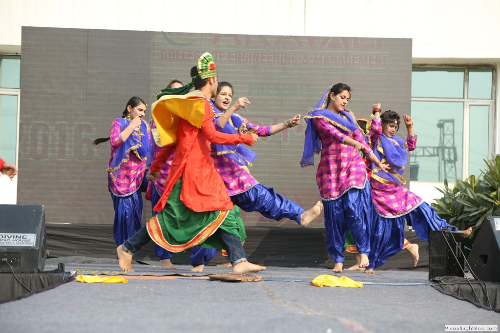

OUR MOTIVE
The main motive of this patrika is to provide the latest news,study material,E-papers,entertainment and updates of the college.As we all know that Aravali college of engineering
and management focuses on the overall growth of its students,we as aravalians has taken initiative to take that legacy forward.Through
this patrika more and more number of people can get the latest updates of college.This patrika is very beneficial for the people who want to know
more about latest news .Aravali college of engineering and management was formed in the year 2008 with a vision to become one of the finest institution
in the country,in the field of the technical education and research;through focused,effective and sustained efforts and programme.The main aim of the
patrika is to provide the information to every person not only around the Delhi NCR but all around the world.This patrika contains many sections such
as news,gallery,recent industrial visits,fests, fresher's,e-papers etc.
